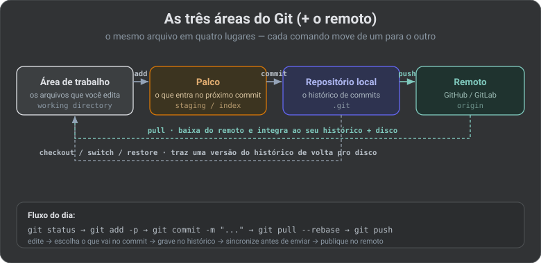
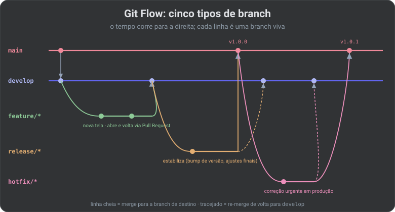
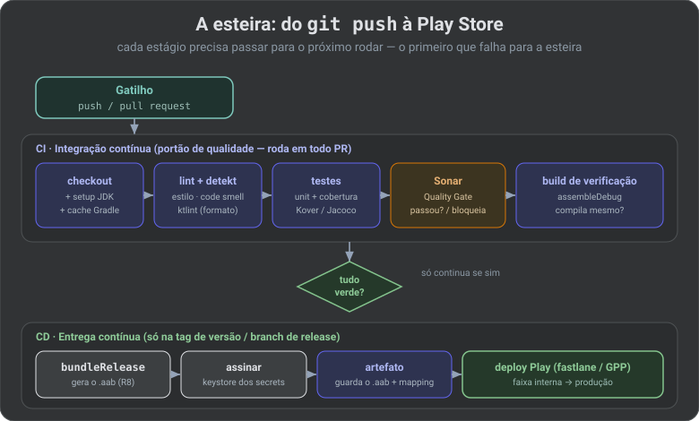
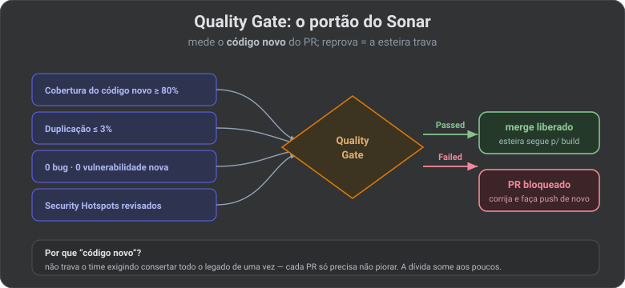

Você já sabe compilar o app (Gradle), onde ele compila (SDK) e como publicá-lo à mão na Play. Falta a peça que costura tudo: como o código sai da sua cabeça, vira histórico versionado, passa por um controle de qualidade automático e chega à loja sem ninguém apertar botão. Essa peça tem dois nomes: Git (o versionamento) e a esteira de CI/CD (a linha de montagem automática).
🔗 Fio condutor: no artigo 01 a fábrica era o Gradle montando o app na sua máquina. Aqui a mesma fábrica ganha uma esteira robótica na nuvem: ela pega cada
git push, roda os mesmos comandos./gradlewque você já viu, e entrega o.aabdo artigo 08 direto na faixa da Play — só que sozinha, toda vez.
Git é uma máquina do tempo para o seu código. Cada commit é uma foto do projeto inteiro, com data, autor e um bilhete dizendo o que mudou. Você pode voltar, comparar duas fotos, ou trabalhar numa linha do tempo paralela sem estragar a principal.
🧠 Termo — commit: um ponto salvo no histórico. Não é “salvar o arquivo” (isso o editor já faz) — é gravar no histórico do Git uma versão fechada, com mensagem, para poder voltar a ela depois.
O Git não tem “dois lugares” (meu PC / o servidor). Tem quatro. O mesmo arquivo caminha por eles, e cada comando do dia a dia é só “mover de uma caixa para a próxima”.

| Área | O que é | Comando que leva pra cá |
|---|---|---|
| Área de trabalho (working directory) | Os arquivos como estão no disco, do jeito que você editou. | seu editor |
| Palco (staging / index) | A “bandeja” do que vai entrar no próximo commit. Deixa você commitar só parte do que mexeu. | git add |
| Repositório local (.git) | O histórico de commits que mora no seu PC. Funciona 100% offline. | git commit |
| Remoto (origin) | A cópia compartilhada no GitHub/GitLab, onde o time se encontra. | git push |
git init # cria um repositório novo na pasta atual
git clone git@github.com:org/nexushub.git # baixa um repositório que já existe
git config --global user.name "Seu Nome" # quem assina os commits (uma vez por máquina)
git config --global user.email "voce@email.com"
⚠️ Pegadinha: o e-mail do
git configprecisa ser o mesmo cadastrado no GitHub — senão seus commits aparecem “de um estranho” e não contam no seu perfil.
git status # o que mudou? o que está no palco? em que branch estou?
git diff # mostra, linha a linha, o que eu mudei (ainda fora do palco)
git add app/src/.../Tela.kt # põe UM arquivo no palco
git add -p # revisa pedaço por pedaço e escolhe o que entra (recomendado)
git add . # põe TUDO que mudou no palco (cuidado com lixo)
git commit -m "feat: tela de login com validação" # grava a foto no histórico local
git log --oneline --graph # vê o histórico compacto, com o desenho das branches
git pull --rebase # baixa o que o time enviou e recoloca seus commits por cima
git push # envia seus commits para o remoto
🧠 Termo — branch: uma linha do tempo paralela. Você cria uma para cada tarefa, trabalha isolado, e depois “junta” (merge) na principal. A branch principal geralmente se chama
main.
git switch -c feat/carrinho # cria e entra numa branch nova (git checkout -b faz o mesmo)
git switch main # volta para a principal
git branch # lista as branches locais
git merge feat/carrinho # traz os commits da feature para a branch atual
git branch -d feat/carrinho # apaga a branch já mesclada
| Situação | Comando | O que faz |
|---|---|---|
| Mexi no arquivo e quero descartar | git restore Tela.kt | volta o arquivo ao último commit |
| Pus no palco por engano | git restore --staged Tela.kt | tira do palco (mantém a edição) |
| Errei a mensagem do último commit | git commit --amend | reescreve o commit de cima |
| Quero desfazer um commit já feito | git revert <hash> | cria um commit que anula o outro (seguro, mantém histórico) |
| Preciso guardar tudo e trocar de tarefa | git stash | engaveta as mudanças; git stash pop traz de volta |
🔒 Visão Specialist: em código já enviado ao remoto e compartilhado, use
git revert, nuncagit reset --hardseguido depush --force. Orevertanula sem apagar história; oreset --forcereescreve o passado e quebra o repositório de todo mundo que já baixou aqueles commits.
.gitignore: o que NÃO versionarNem tudo entra no Git. Coisa gerada (o build/), segredo (o keystore e senhas do artigo 08) e configuração de máquina ficam de fora, listados no .gitignore:
# .gitignore de um projeto Android
.gradle/
build/
local.properties # caminho do SDK (é da SUA máquina — artigo 02)
*.jks
*.keystore # o cofre da chave NUNCA vai pro Git (artigo 08)
keystore.properties # senhas do keystore
.idea/
⚠️ Pegadinha: o
.gitignoresó ignora arquivos que o Git ainda não rastreia. Se você já commitou obuild/antes, precisa removê-lo do índice comgit rm -r --cached build/— só adicioná-lo ao.gitignorenão basta.
Uma mensagem boa não é só educação com o colega — a esteira pode lê-la para decidir o número da versão. O padrão mais usado é o Conventional Commits: tipo: descrição.
| Prefixo | Quando usar | Efeito na versão (SemVer) |
|---|---|---|
feat: | recurso novo | sobe o minor (1.2.0) |
fix: | correção de bug | sobe o patch (1.2.3) |
docs: / style: / refactor: / test: / chore: | documentação, formatação, reorganização, testes, tarefa de manutenção | não muda versão pública |
feat!: ou rodapé BREAKING CHANGE: | quebra compatibilidade | sobe o major (2.0.0) |
🧠 Termo — SemVer (Versionamento Semântico): o
MAJOR.MINOR.PATCHdoversionName(artigo 08). Major = quebrou algo; minor = recurso novo compatível; patch = só conserto. O robô consegue calcular isso lendo os commits.
Conforme o time cresce, “todo mundo commita na main” vira caos. O Git Flow é um combinado de nomes de branch, cada uma com um papel:

| Branch | Papel | Nasce de / volta para |
|---|---|---|
main | Só o que está em produção. Cada commit aqui é uma versão publicada (leva uma tag). | — |
develop | A integração do dia a dia. Tudo que já está pronto mas ainda não foi lançado. | nasce de main |
feature/* | Uma tarefa/recurso. Vive isolada até ficar pronta. | sai de develop, volta via PR |
release/* | Congela o escopo para estabilizar (bump de versão, ajustes finais). | sai de develop → main + develop |
hotfix/* | Correção urgente em produção, sem esperar o ciclo normal. | sai de main → main + develop |
🧠 Termo — Pull Request (PR) / Merge Request: um pedido formal de “juntem a minha branch na de vocês”. É onde o colega revisa o código e onde a esteira roda os testes antes de deixar mesclar. É o portão de entrada da qualidade.
🔒 Visão Specialist: Git Flow é ótimo para apps com versões planejadas (o caso do app de loja, que passa por review da Google). Times que entregam várias vezes ao dia preferem o GitHub Flow / Trunk-Based: só
main+ branches curtas de feature que voltam em horas. Para o NexusHub, comece simples (main+feature/*+ PR) e adotedevelop/releasesó quando o ciclo de release justificar.
git tag -a v1.2.0 -m "Release 1.2.0" # marca este commit como a versão 1.2.0
git push origin v1.2.0 # envia a tag — é ISSO que a esteira de CD escuta
Toda vez que alguém dá push, seria bom rodar o lint, os testes e um build “de verdade” — mas ninguém faz isso à mão toda vez. A esteira faz: um servidor na nuvem que, a cada push, executa uma receita de passos e só deixa o código avançar se todos passarem.
🧠 Termo — CI e CD: CI (Integração Contínua) = a cada push, junte o código e prove que ele compila e passa nos testes. CD (Entrega Contínua) = quando o CI passa numa versão, empacote e entregue (na faixa interna da Play, ou direto em produção). CI cuida da qualidade; CD cuida da entrega.

| Estágio | Comando típico | Por que existe |
|---|---|---|
| 1. Checkout & setup | baixar o código, instalar o JDK, restaurar o cache do Gradle | preparar a máquina limpa da nuvem (ela não tem seu ambiente do artigo 02) |
| 2. Lint | ./gradlew lintDebug | Android Lint: acha bugs de API, layout, permissões, acessibilidade |
| 3. Detekt / ktlint | ./gradlew detekt | análise estática de Kotlin: complexidade, code smell, formatação |
| 4. Testes | ./gradlew testDebugUnitTest | prova que a lógica funciona; gera o relatório de cobertura |
| 5. Sonar | ./gradlew sonar | consolida tudo e aplica o Quality Gate (Parte 4) |
| 6. Build | ./gradlew assembleDebug | prova que o app compila de ponta a ponta, não só os testes |
| 7. Empacotar (CD) | ./gradlew bundleRelease | gera o .aab assinado (artigo 08) |
| 8. Deploy (CD) | fastlane / Gradle Play Publisher | envia para a faixa da Play sem ninguém abrir a Console |
A receita mora num arquivo YAML dentro do repositório, em .github/workflows/ci.yml. Este roda a faixa de CI em todo push e PR:
name: CI
on:
push:
branches: [ main, develop ]
pull_request:
jobs:
verificacao:
runs-on: ubuntu-latest
steps:
- uses: actions/checkout@v4
- name: Instalar JDK 17
uses: actions/setup-java@v4
with:
distribution: temurin
java-version: '17'
cache: gradle # reaproveita o cache do Gradle entre execuções
- name: Lint
run: ./gradlew lintDebug
- name: Detekt
run: ./gradlew detekt
- name: Testes + cobertura
run: ./gradlew testDebugUnitTest koverXmlReport
- name: Análise Sonar (aplica o Quality Gate)
env:
SONAR_TOKEN: ${{ secrets.SONAR_TOKEN }}
run: ./gradlew sonar
- name: Build de verificação
run: ./gradlew assembleDebug
🧠 Termo — runner: a máquina virtual descartável (aqui
ubuntu-latest) que executa os passos. Ela nasce limpa a cada execução — por isso o passo de setup reinstala o JDK e o cache. É a mesma ideia do./gradlew(Wrapper, artigo 01): a receita precisa funcionar numa máquina que nunca viu seu projeto.
⚠️ Pegadinha:
${{ secrets.SONAR_TOKEN }}vem do cofre de Secrets do repositório, nunca escrito no YAML. Segredo em texto no arquivo = qualquer um que clonar o repo rouba seu token. Vale para o Sonar, para a senha do keystore e para a chave da Play.
Os três olham seu código sem rodá-lo (análise estática), mas em camadas diferentes. Não competem — se somam.
| Ferramenta | Foco | Exemplo do que pega |
|---|---|---|
| Android Lint (vem no AGP) | regras específicas de Android | API nova usada sem checar versão, contentDescription faltando, permissão inútil, vazamento de contexto |
| ktlint | formatação de Kotlin | indentação, import fora de ordem, espaçamento — o “corretor ortográfico” |
| Detekt | code smell de Kotlin | função gigante, complexidade alta, aninhamento profundo, !! perigoso |
| Sonar (SonarQube / SonarCloud) | painel + portão do time inteiro | consolida bugs, vulnerabilidades, cobertura, duplicação e bloqueia o PR se piorar |
Lint e Detekt rodam e cospem uma lista no terminal — que ninguém lê depois de um tempo. O Sonar é o nível acima: um servidor que recebe os resultados de cada análise, guarda o histórico, mostra num painel (“a dívida técnica subiu ou caiu esta semana?”) e — o mais importante — aplica um Quality Gate: um conjunto de regras que, se não forem cumpridas, reprova o Pull Request.
🧠 Termo — SonarQube vs SonarCloud: a mesma ferramenta em duas formas. SonarQube = você hospeda o servidor (controle total, bom para código privado/empresa). SonarCloud = a versão hospedada pelo Sonar (grátis para projetos open source, zero infraestrutura).

O Quality Gate mede, por padrão, só o código que o PR adicionou ou mudou — não o legado inteiro. Isso é o que torna a ferramenta usável num projeto real: você não precisa parar tudo para consertar 5 anos de dívida técnica; só precisa garantir que cada PR não piore. A qualidade sobe de forma incremental, sem travar o time.
🔒 Visão Specialist: cobertura de teste é um piso, não um troféu. 80% de cobertura com testes que não verificam nada é pior que 60% com testes de verdade, porque dá falsa segurança. Use o Quality Gate para impedir regressão (o número cair), não para caçar 100% — os últimos 20% costumam ser getters e código de UI que o teste unitário não alcança bem.
// build.gradle.kts (raiz) — plugins de qualidade
plugins {
id("io.gitlab.arturbosch.detekt") version "1.23.7"
id("org.sonarqube") version "5.1.0.4882"
id("org.jetbrains.kotlinx.kover") version "0.9.1" // cobertura
}
sonar {
properties {
property("sonar.projectKey", "org_nexushub")
property("sonar.organization", "org")
property("sonar.host.url", "https://sonarcloud.io")
// o token vem do ambiente (secret), nunca daqui
}
}
A faixa de CD só roda quando você empurra uma tag de versão (Parte 2). Ela repete os passos manuais do artigo 08 — mas o robô é quem assina o .aab e o envia para a Play. Dois problemas precisam ser resolvidos: a assinatura e a credencial da Play.
O keystore (o cofre da chave, artigo 08) não vai para o repositório. O truque: converter o arquivo para texto (base64), guardar esse texto num Secret, e a esteira reconstrói o arquivo em memória na hora do build.
# na sua máquina, uma vez: transforma o cofre em texto para colar no Secret
base64 -i release.jks | pbcopy # macOS (no Linux: base64 release.jks)
# cole em: repositório → Settings → Secrets → KEYSTORE_BASE64
🧠 Termo — Service Account (conta de serviço): um “usuário robô” do Google Cloud, com um arquivo JSON de credencial. Você o cria uma vez, dá a ele permissão na Play Console para publicar, e a esteira usa esse JSON para se autenticar — sem senha humana, sem 2FA. É o que substitui “você logando na Console”.
A ferramenta que usa esse JSON pode ser o fastlane (Ruby, muito usado) ou o plugin Gradle Play Publisher (GPP). Com o GPP, publicar vira uma task do Gradle:
./gradlew publishReleaseBundle # envia o .aab para a faixa configurada da Play
name: Release
on:
push:
tags: [ 'v*' ] # dispara SÓ quando uma tag v1.2.0 é enviada
jobs:
publicar:
runs-on: ubuntu-latest
steps:
- uses: actions/checkout@v4
- uses: actions/setup-java@v4
with: { distribution: temurin, java-version: '17', cache: gradle }
- name: Reconstruir o keystore a partir do Secret
run: echo "${{ secrets.KEYSTORE_BASE64 }}" | base64 --decode > release.jks
- name: Gerar o .aab assinado
env:
KEYSTORE_PASSWORD: ${{ secrets.KEYSTORE_PASSWORD }}
KEY_ALIAS: ${{ secrets.KEY_ALIAS }}
KEY_PASSWORD: ${{ secrets.KEY_PASSWORD }}
run: ./gradlew bundleRelease
- name: Publicar na faixa interna da Play
env:
PLAY_SERVICE_ACCOUNT_JSON: ${{ secrets.PLAY_SERVICE_ACCOUNT_JSON }}
run: ./gradlew publishReleaseBundle
- name: Guardar o .aab e o mapping como artefato
uses: actions/upload-artifact@v4
with:
name: release-aab
path: |
app/build/outputs/bundle/release/*.aab
app/build/outputs/mapping/release/mapping.txt
🧠 Termo — artefato (artifact): um arquivo que a esteira gera e guarda ao final (o
.aab, um APK de teste, o relatório de cobertura, omapping.txt). Fica anexado àquela execução, para download ou para o próximo passo usar.
⚠️ Pegadinha: guarde sempre o
mapping.txtde cada release. É o “dicionário” que desembaralha os nomes que o R8 encolheu (artigo 08). Sem ele, o relatório de crash da Play vira sopa de letras e você não descobre onde o app quebrou em produção.
🔒 Visão Specialist: publique da esteira para a faixa interna automaticamente, mas deixe a promoção para produção como um passo manual (um clique de aprovação na Console, ou um environment protegido no GitHub). CD 100% automático até a loja é para times com testes de UI robustos e rollout gradual bem monitorado — comece com o robô parando na porta da produção.
| Item | Ação |
|---|---|
| .gitignore | Ignorar build/, local.properties, *.jks e senhas antes do primeiro commit |
| Branch protegida | Proibir push direto na main; exigir PR + CI verde para mesclar |
| Commits | Adotar Conventional Commits (feat:, fix:…) desde já |
| CI | ci.yml rodando lint + detekt + testes + build em todo PR |
| Quality Gate | Sonar configurado para bloquear PR que piore o código novo |
| Segredos | Keystore (base64), senhas e JSON da conta de serviço só nos Secrets |
| CD | release.yml em tag v*: assina, publica na faixa interna, guarda .aab + mapping.txt |
| Produção | Promoção para produção como passo manual aprovado por alguém |
| Termo | Em uma linha |
|---|---|
| commit | Uma foto do projeto no histórico, com autor e mensagem. |
| staging / palco | A bandeja do que vai entrar no próximo commit (git add). |
| branch | Uma linha do tempo paralela para uma tarefa. |
| remote / origin | A cópia compartilhada no GitHub/GitLab. |
| Pull Request | Pedido de merge onde o código é revisado e a esteira roda. |
| Git Flow | Combinado de branches (main/develop/feature/release/hotfix). |
| tag | Marca de versão (v1.2.0) que dispara o release. |
| CI | A cada push, provar que compila e passa nos testes. |
| CD | Empacotar e entregar automaticamente quando o CI passa. |
| runner | A máquina virtual descartável que roda a esteira. |
| Lint / Detekt | Análise estática: bugs de Android / code smell de Kotlin. |
| Sonar | Painel + Quality Gate que bloqueia PR que piora o código. |
| Quality Gate | As regras que o código novo precisa cumprir para mesclar. |
| Secret | Cofre do repositório para senhas e chaves (fora do código). |
| Service Account | Usuário-robô com JSON que autentica a esteira na Play. |
| artefato | Arquivo que a esteira gera e guarda (.aab, mapping.txt). |